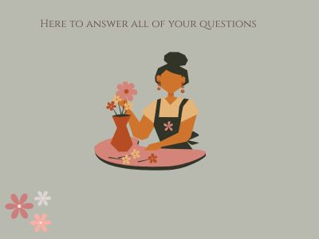
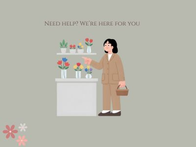

FAQ
Ovde su odgovori na najčešća pitanja. Ako ti treba preporuka za boje, stil ili povod, javi nam se i rado ćemo pomoći.
Usluge uključuju bukete po meri, dekoracije, poklon-kutije i savete za negu cveća.


Preporuka je bar 1 dan unapred, a za veće aranžmane i dekoracije 3–5 dana ranije.
Ako je hitno, pošalji poruku — često možemo da napravimo i istog dana.
Da — dovoljno je da napišeš povod, omiljene boje i budžet.
Mi predlažemo kombinacije i šaljemo predlog pre finalne izrade.
Promeni vodu na 1–2 dana, skrati stabljike pod uglom, i drži buket dalje od direktnog sunca
i izvora toplote. Ako dobiješ kesicu hrane za cveće, obavezno je koristi.
Da — radimo bidermajere, rever ukrase i dekoraciju prostora (stolovi, lukovi, detalji).
Najbolje je da nam pošalješ temu i paletu boja, pa dogovorimo termin i plan.
Imamo — ukrasne kutije sa cvećem su odlične za poklon jer deluju luksuzno i uredno.
Mogu biti u nežnim ili jačim tonovima, uz dodatak mašne i poruke.
Najbrže preko telefona: +381645398776. Takođe možeš preko stranice Kontakt
(forma ili direktan poziv). Rado ćemo preporučiti buket prema povodu i budžetu.